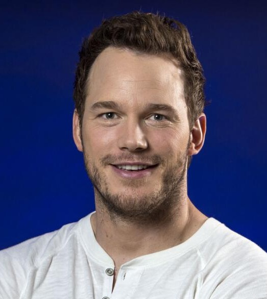

The organization started on August 18, 2018 when the owner, Tony Stark, saw many animals on the streets and couldn't do anything to help because of his lack of space in his home.
He decided to create this organization to bring people together to help animals in need, and be able to create a place for animals who need it.
We host events in our organizations where people can come in and play with the animals so they don't feel bored or feel lonely every 2 weeks.
This also gives a chance for the animals to find a potential owner!
If you are interested in buying a ticket for the event please visit our events page.
Part of the management team. Very dedicated to her work and is passionate for what she does. She has 2 dogs, Maggie and Pancake.

Also, part of the management team. Loves to crack jokes and keeps the positivity in the room. Has a farm with many animals including a pig named Magnus.